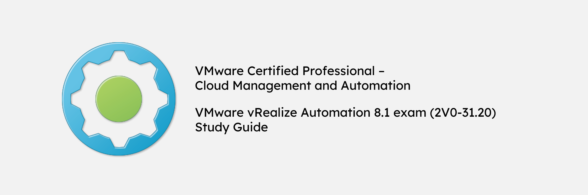

VCP-CMA 2020 (2V0-31.20) Exam Study Guide - Sections 5-6

This study guide aligns with the exam blueprint for the Professional VMware vRealize Automation 8.1 exam (2V0-31.20), which leads to the VMware Certified Professional - Cloud Management and Automation 2020 certification. The exam is 135 minutes with 70 questions.
This study guide has been created to help myself study for the exam, but I hope you find this helpful in your own preparation for the exam. If you want official training to prepare for the exam, please refer to VMware Learning.
Note that the screenshots in this study guide are from a vRA cloud environment, not an on-prem vRA 8.1 environment. There should not be a significant difference between the two at the time of taking these screenshots.
Section 5 - Performance-tuning, Optimization, Upgrades
There are no testable objectives for this section.
Section 6 - Troubleshooting and Repairing
Objective 6.1 - Collect Log Bundles
The log bundle is a zip file containing the environment file and both the service and core system logs.
An environment file, included in the log bundle, shows configuration settings. This file has details about hardware, IP addresses and cluster infromation, and log information about top-level system functions (i.e. data collection).
You can access logs captured per service based on the pod name by using the kubectl logs -n prelude <pod-name> command. You can use kubectl -n prelude get pods command to find the current container log.
To create a log bundle, you go to the directory where you want to collect logs and use the vracli log-bundle command. All containers are named after the pod.
For more information on logs and log bundles, please refer to the official documentation here.
Objective 6.2 - Describe vracli Command Options
vracli is a custom-built command set tool for implementing and modifying the vRealize Automation appliance infrastructure.
Basic output of any vracli command:
vracli [command] [resource] [flags]
You can use vracli -h for CLI help.
Here is a list of some of the vracli commands:
cluster- cluster administration commandsdb- database-related commandsldap- LDAP administration commandslicense- lists currently registered license keysload-balancer- current load balancer addresslog-bundle- create a log bundlereset- reset commands based on Kubernetes configuration updatesstatus- shows cluster statusupgrade- upgrade commands tool for vRA upgradevidm- VMware Identity Manager (vIDM) administration commands
Objective 6.3 - Describe kubectl Command Options
kubectl is a set of Kubernetes commands to manage Kubernetes services, pods, and container-level functions in the environment.
Basic output of any kubectl command:
kubectl [command] [TYPE] [NAME] [flags]
You can use kubectl -h for CLI help.
In order to access the prelude namespace where the vRA service resides, you must add -n prelude for many of the kubectl functions.
Example: kubectl -n prelude get pods.
Here are some of the kubectl commands:
attach- attach an arbitrary object to a running containerauth- inspect authorizationautoscale- Autoscale Deployment, ReplicaSet, or ReplicationControllercertificate- manage certificates; note, do not use this command; usevracli certificateinsteadcluster-info- display cluster informationconfig- modify theconfigfilesconvert- convert configuration files between different API versions; this command is not currently used in vRAcordon- Mark the node as unschedulable; note, avoid using this commandcp- copy files and directories to and from containerscreate- create a resource from a file or from stdindelete- delete resources by filenames, stdin, resources and names, or by resources and label selectordescribe- display details of a specific resource or group of resourcesdrain- drain the node to prepare for maintenanceedit- edit a resourceexec- run a command in a containerexplain- documentation of resourcesexpose- take a replication controller, service, deployment, or pod and expose it as a new Kubernetes serviceget- display resource(s)logs- print logs for a container in a podpatch- update fields of a resource by using a strategic merge patch; note, do not use this command in vRArollout- manage the rollout of a resourcerun- run an image on the clusterscale- set a new size for Deployment, ReplicaSet, ReplicationController, or Job Used to deploy additional resources and container sizes for individual servicesset- set specific features on objectstaint- update the taints on one or more nodes; this command is not currently used in vRAtop- display resource usage (CPU, memory, storage)uncordon- Mark the node as schedulable; note, avoid using this commandversion- print the client and server version information
For more details on kubectl CLI, please refer to the Kubernetes official documentation here.
Objective 6.4 - Troubleshoot vRA Configuration Errors
You can start troubleshooting vRealize Automation errors by checking the status of vRA appliances and services.
You can use the vracli status base command to see hardware and software versioning, such as Kubernetes build version, Linux distribution information, and host names. This command also initiates specific health checks from the Postgres databases for the vRA appliance so a top metric ouput is available for networking, disk usage, memory limits, and the overall status of the appliance.
To verify status of all services and top-level metrics, you can use the kubectl -n prelude get pods command. If you want to see information for a specific pod, you can use the kubectl -n prelude describe <pod-name> command.
If all else fails, you can try resetting the vRA configuration by running the /opt/scripts/deploy.sh script. The script runs the helm integrations and will redeploy containers in prelude based on configuration files. The Postgres database and data are not destroyed, but service pods are reconfigured.
Objective 6.5 - Troubleshoot Provisioning Errors
If your deployment request fails, you can start by looking at the displayed error message on the failed deployment under the “Deployments” tab.

For more details, click on the failed deployment and click “History” tab. The event tree shows all the events that have happened in a sequence, so you can see exactly where the deployment has failed.

You can also click “provisioning diagram”, which will take you to Request Details and display the provisioning workflow. The failed components will be in red; you can see the error message there as well.

Objective 6.6 - Monitor Deployments
You can monitor active deployments from under the “Deployments” tab.
You can also see provisioning workflows by going to “Infrastructure” then “Requests” and clicking on the specific deployment you want to monitor.

Objective 6.7 - Monitor vRO Workflow Execution
You can monitor vRO workflow runs by going to “Extensibility” then “Workflow Runs”.